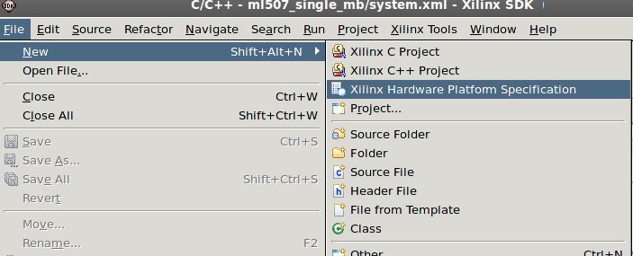
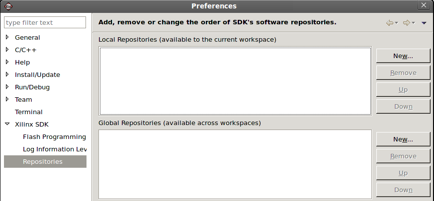
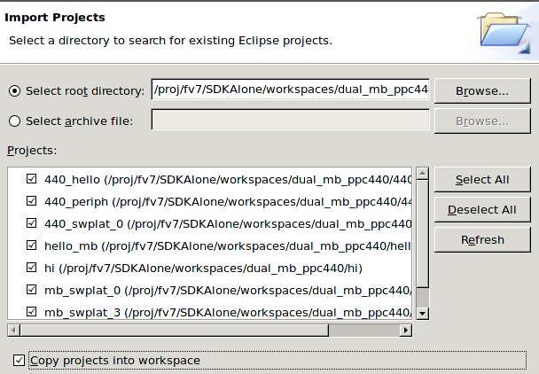

Migrating an 11.x SDK project
The SDK tool flow changed in the 12.1 release. You are now
required to create a hardware project that includes the Hardware
Specification (.xml) file, the Bitstream (.bit) and BMM file
exported from XPS. This allows you to manage multiple hardware
projects in the workspace and also makes the SDK projects portable,
removing absolute reference to the Hardware Specification file. If
you have software projects created using a previous version of
SDK, this is markedly different from using the Xilinx MicroProcessor
Project (.xmp) file.
As a first step, you should rev up your 11.x hardware project using XPS 12.x and export the hardware specification file. For more information, refer to Exporting hardware specification in XPS.
If you do not want to modify your hardware project, you can
continue to use the existing hardware specification file. Some
library and driver versions that you used in previous board support
package (BSP) projects may
no longer be available in the 12.x release since the drivers and
libraries shipped with SDK follow a versioning scheme, and older
versions are removed from the installation. Therefore, you will
see build failures when you import a BSP project. There are multiple ways to solve this problem that require your manual intervention, such as the following:
- If you want to continue using the older driver and library version, you need the source code of these driver and library version from a previous SDK installation. Create a software repository, include these driver and library versions, and specify the path to this software repository in your new workspace. Refer to Setting up Software Repositories for more information.
- Upgrade the driver and library version to the latest available
version. Edit the Microprocessor Software Specification (*.mss)
file located in your project directory and change the failing
library and driver to the latest version. There might be changes in
the interface functions for some of these driver and libraries, and
you might have to modify your software application code
accordingly. Refer to the Xilinx Device Drivers (xilinx_drivers.htm) and the OS and Libraries Document Collection (oslib_rm.pdf) in the doc/usenglish folder of your SDK installation area for the list of available driver and library versions, respectively, and the change logs.
To convert a software project from SDK version 11.x into your SDK 12.x workspace
- Create a new workspace using SDK 12.x.
- Select File > New > Xilinx Hardware
Platform Specification and
create a Hardware Project using the Hardware Specification
file that XPS exported. If you launch SDK directly
from XPS, the workspace is automatically created in a default
location and SDK uses the Hardware Specification file that was
exported by XPS.

- If you have a local copy of your software repository, select
Xilinx Tools > Repositories to specify the repository
location.

- Select File > Import. The Import wizard opens.
- Select Existing Projects into Workspace and click Next.
- Click to select either Select root directory or Select archive file (if your project was exported as an archive file) and click the associated Browse button to locate the directory or file containing the
project files.
- In the Projects box, select the project or
projects to import.
- Enable the Copy projects into workspace check box. It
is required that you copy the old projects into workspace to
overwrite existing eclipse metadata files with new ones.

- Click Finish to start the import.

Xilinx embedded software
Sharing and archiving projects

Importing software projects
Exporting software projects
Copyright © 1995-2012 Xilinx, Inc. All rights reserved.